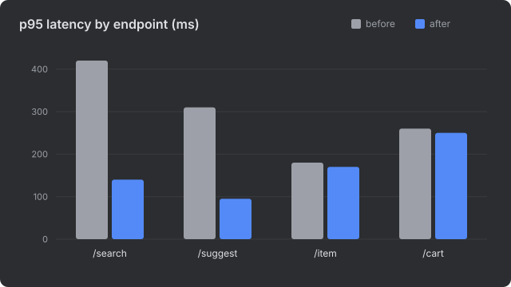
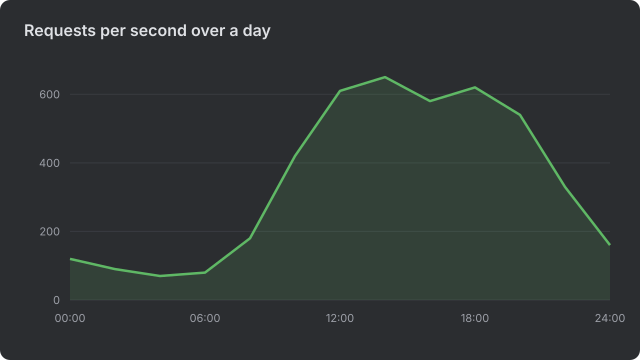

Search latency after caching
p95
/search140 msChange−67%
Cache hit rate81%
/cart p95250 msErrors3
Summary
Caching search results cut the p95 of /search from 420 ms to 140 ms and of
/suggest from 310 ms to 95 ms. /item and /cart barely
moved, because they do not use the cache. Three requests failed while the cache warmed up;
they need a look before this ships.
Measurements


By endpoint
| Endpoint | p95 before | p95 after | Change | Uses the cache |
|---|---|---|---|---|
/search | 420 ms | 140 ms | −67% | yes |
/suggest | 310 ms | 95 ms | −69% | yes |
/item | 180 ms | 170 ms | −6% | no |
/cart | 260 ms | 250 ms | −4% | no |
What to do next
Ship
The cache for /search and /suggest, behind the existing flag.
Decide
Whether /cart is worth caching; it changes on every request.
Fix first
The three errors during warm-up: a missing timeout on the first fill.
How it was measured
k6 run --vus 200 --duration 10m load/search.js git diff --stat main...feature/search-cache